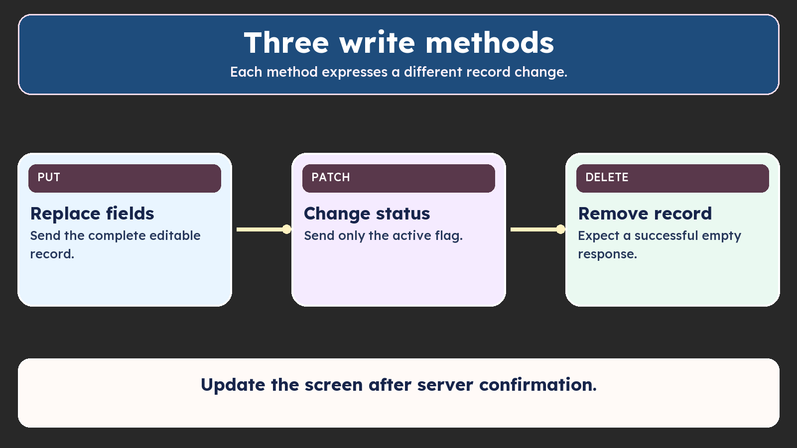

Use this lecture’s source checkpoint with the Script/Show map.

Update the screen after server confirmation.
Follow each operation through its control and browser result: PUT saves all editable fields (200), PATCH changes the active flag (200), then confirmed DELETE removes the record (204 with no body). Each targets /api/employees/:id. This diagram is the closing comparison after those demonstrations.